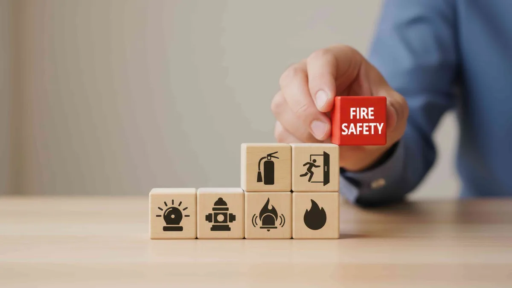

Fire safety cannot be ignored — it is an obligation. As a building owner of a skyscraper, a storage unit, or a residential building, it becomes imperative for you to have the right fire protection devices that can help save your life and property in the event of a fire outbreak. In this article, you will learn all the fire safety products that every building requires and the best supplier for your fire protection needs – the LockShield Cart Company.
What Makes a Building Truly Fire-Safe?
Everyone believes that fire safety is just about installing a fire extinguisher in one of the corners and forgetting about it. Fire protection, however, should be seen as a complex process involving various components that interact and ensure safety from the fire hazard.
A truly fire-safe building includes:
- Proper fire extinguishers with protective covers installed at accessible points
- Fire hose reels positioned for quick deployment
- Fire alarm cables connecting every sensor to the control panel
- Fire rated doors that prevent the spread of smoke and flames between zones
- Regular maintenance, staff training, and compliance with local fire codes
The problem is that failure to provide one layer can result in an insecure system. This is the reason why selecting a Fire Extinguisher Covers Supplier and Fire Hose Reels supplier cannot be overlooked by building managers.
Why Are Fire Extinguisher Covers Important?
Are Fire Extinguisher Covers Just for Aesthetics?
Not at all. Fire extinguisher covers are a critical part of equipment maintenance and workplace safety. Here’s why:
- Protection from dust and corrosion: Exposed extinguishers in industrial or outdoor environments can corrode or clog, making them ineffective during an emergency.
- UV and weather resistance: Covers shield cylinders from direct sunlight and moisture, extending their operational life significantly.
- Quick visual identification: Bright, color-coded covers make extinguishers immediately visible, reducing response time during a fire.
- Tamper prevention: Covers with locks or seals deter unauthorized use or accidental discharge.
In case you lack fire extinguisher covers for your building, it is important to talk to an expert Fire Extinguisher Covers Supplier in order to know what will work best for you. LockShield Cart provides a variety of certified covers which suit all kinds of settings, ranging from offices to industries.
What Role Do Fire Hose Reels Play in Fire Suppression?
How Do Fire Hose Reels Work and Where Should They Be Installed?
Fire Hose Reels are an excellent solution for supplying water for extinguishing fires at their early stages. This fire safety equipment is always linked to the building’s water source and may be used by trained people or even an untrained individual in case of an emergency.
Key benefits of properly installed Fire Hose Reels include:
- Immediate water access without waiting for the fire brigade
- Wide coverage area — a standard hose reel can reach up to 30 metres
- Cost-effective suppression for early-stage fires in corridors, stairwells, and storage areas
- Compliance with UAE civil defense regulations
Installation guidelines recommend placing fire hose reels:
- At a maximum travel distance of 30 metres from any point in the building
- In clearly visible, unobstructed locations
- Near stairwells and exit routes
- At every floor level in multi-storey buildings
Be it installing fire hose reels for a new installation or replacing old ones, buying high-quality fire hose reels from a certified manufacturer guarantees you get equipment that performs up to the mark.
Why Are Fire Alarm Cables So Critical to Your System?
What Happens When You Cut Corners on Fire Alarm Cables?
Fire alarms depend on their cables being reliable, as these cables transmit information from one fire alarm component to another (e.g., detectors, call points, sounders, and the fire alarm control panel). When there is a risk of fire, the cables must keep transmitting information despite heat or fire until all the occupants evacuate the building.
Here’s what separates standard cables from proper fire-rated alarm cables:
- Circuit integrity: Certified cables maintain electrical function for a defined period (typically 30–120 minutes) even when exposed to direct fire
- Low smoke and halogen-free (LSZH) compounds: Reduce toxic fume emission during a fire, protecting occupants during evacuation
- Compliance with international standards: BS 5839, EN 50200, and UAE civil defense norms
Saving money on alarm cable installation is perhaps the most hazardous shortcut a structure can make. At LockShield Cart, we pride ourselves as trusted suppliers of fire alarm cables which are tested, approved, and designed for demanding conditions.
What Are Fire Rated Doors and Do You Really Need Them?
How Do Fire Rated Doors Protect Lives and Property?
Fire resistance doors are doors that are designed to stop the spread of fires and smoke within a particular time period. These time periods could be 30 minutes, 60 minutes, or 120 minutes. Fire resistance doors are some of the most passive fire-resistant components available.
Why fire rated doors are non-negotiable:
- They compartmentalize fire, slowing its spread and giving occupants time to evacuate safely
- They protect escape routes like stairwells and corridors from smoke infiltration
- They are legally required in most commercial, residential, and industrial buildings under UAE civil defense regulations
- They reduce property damage by containing the fire to a single zone
Common locations where fire rated doors are mandatory:
- Stairwells and emergency exit routes
- Server rooms and data centers
- Kitchen and cooking areas in commercial buildings
- Plant rooms, electrical rooms, and storage areas with flammable materials
Always ensure that the doors are accompanied by test certificates from third parties and have appropriate intumescent seals whenever you source your Fire Rated Doors from trusted Fire Rated Doors Suppliers. LockShield Cart provides top quality fire rated doors for clients in UAE.
How Do You Choose the Right Fire Safety Supplier in the UAE?
What Should You Look for Before Buying Fire Protection Equipment?
Not all suppliers are equal.
Here’s a checklist to guide your decision:
- Certifications: Products should comply with UAE Civil Defense standards and international norms (BS, EN, UL)
- Product range: A comprehensive supplier handles everything from Fire Extinguisher Covers and Fire Hose Reels to Fire Alarm Cables and Fire Rated Doors — so you’re not juggling multiple vendors
- After-sales support: Installation guidance, maintenance support, and product warranties
- Transparent pricing: No hidden costs; clear quotations for bulk or project-based orders
- Fast delivery: Especially critical for urgent site requirements or compliance deadlines
LockShield Cart checks all these boxes. As one of the UAE’s trusted fire safety equipment providers, they offer a seamless online shopping experience with certified products delivered to your doorstep.
Frequently Asked Questions
Q1: How often should fire extinguisher covers be replaced?
Fire extinguisher covers should be inspected annually and replaced immediately if there are signs of UV damage, tears, discolouration, or if the cover no longer fits snugly. Always consult your Fire Extinguisher Covers Supplier for model-specific recommendations.
Q2: Are fire hose reels mandatory in all UAE buildings?
Yes, UAE Civil Defense regulations require fire hose reels in most commercial, industrial, and residential buildings above a certain size. The exact requirements vary by occupancy type and building height. Consult a certified supplier or civil defense consultant to confirm what applies to your property.
Q3: What is the difference between fire alarm cables and regular electrical cables?
Regular electrical cables are not designed to maintain function under fire conditions. Fire alarm cables have special insulation that preserves circuit integrity for 30–120 minutes during a fire, ensuring alarms and communication systems continue operating during evacuation. Certified Fire Alarm Cables Suppliers will always provide test documentation for their products.
Q4: Can fire rated doors be customized for my building?
Yes. Fire Rated Doors Suppliers typically offer doors in various sizes, finishes, and fire resistance ratings (30, 60, 90, or 120 minutes). Custom dimensions and glazed panels (with fire-rated glass) are also available for specific architectural requirements.
Q5: Does LockShield Cart provide installation services?
Yes. In addition to supplying products, LockShield Cart provides complete fire safety solutions including supply, installation, testing, and maintenance of fire alarm systems and firefighting equipment across the UAE.
Q6: How do I know if my existing fire safety equipment is compliant?
Schedule a fire safety audit through a certified provider. They will assess your extinguishers, hose reels, alarm cables, and doors against current UAE civil defense standards and provide a compliance report with recommendations.
Final Thoughts: Don’t Wait for an Emergency to Think About Fire Safety
One such instance is when it comes to fire safety equipment. In ensuring fire safety, from selecting the correct Fire Extinguisher Covers Supplier to providing Fire Hose Reels which have been certified, each decision will have implications for the occupants of the building tomorrow.
Some other important secondary essentials include choosing from credible Fire Alarm Cables Suppliers and dependable Fire Rated Doors Suppliers, providing you with an ultimate solution that helps you stay compliant and protects both people and assets.
If you want to enhance your fire protection system, LockShield Cart is where you should head to, offering everything fire proof that you will require in the UAE. Visit their website or contact them directly now!